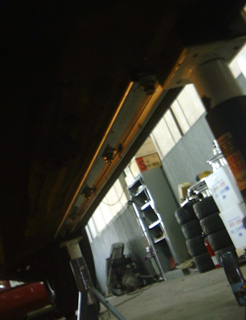
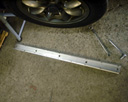
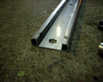
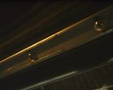

メカドックにて、前後の歪みを補強するプレート「サイド・パフォーマンス・バー」 を入れてもらいました。このようなサイドに入れるプレートは各社で出されてい ますが、メカドックのが一番曲げ に強そうなので選択しました。 結果は、等速で舗装された道を走っているときには特に違いは感じませんが、 段差を乗り越えるときの歪みが少なくなったのと、減速しながらの右左折がやり やすくなりました。以前はそれだけ車体がしなっていたということでしょうか.. 個人的に、某大学の構内は「ペデ」とよばれる謎な歩道の横断箇所に減速、注意 を促すため？の大きな段差があるのですが、以前より減速しなくて済むようにな りました？！
 |
この金属プレートがフロアサイドに取り付けられる。 |
 |
内側に折り込まれるように曲げられており、力のかかる方向に曲がりにくく なっている。(コの字型の曲げまでが一体で、内側のは別のサポート・プレートをスポッ ト溶接？？) 最近、チタン製のものもラインナップされたみたい。 |
| ここに取り付けられる。(どこ？) | |
| 大槻さんが取り付け作業中。ドリルで穴を空けた後、ボルトと入れてしめる と、中で金属がよじれて固定される？？ ボルトをしめるとき、ひとまわり大き いサイズのめがねレンチでワッシャー？を押えながら、ソケットを差し込んで回 していた。めがねレンチにこんな使い方があったのか..(大槻流？それとも常識？？) | |
 |
で、取り付け完了。下からドリルを上に向けての作業は、削れた金属が顔に かかって来たりして大変そうでした。無論、大槻さんは保護めがねを着用。 (気をつけないとやけどをするそうです。) 工賃もそんなに高いものではないので、取り付けは頼んだ方がいいかもしれませ ん。 |


ｂｙ すすたわり